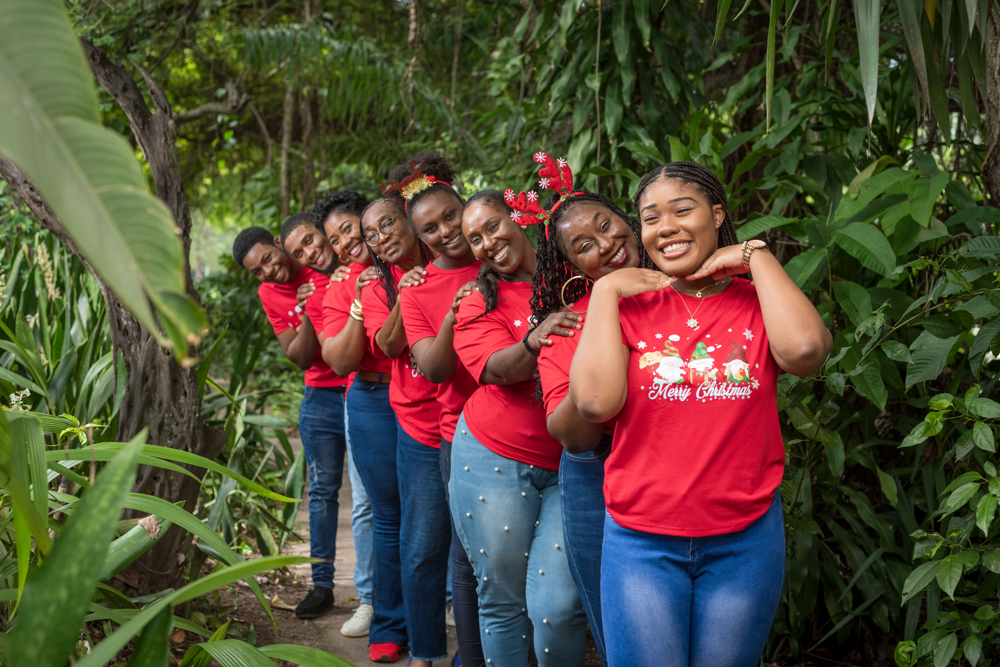
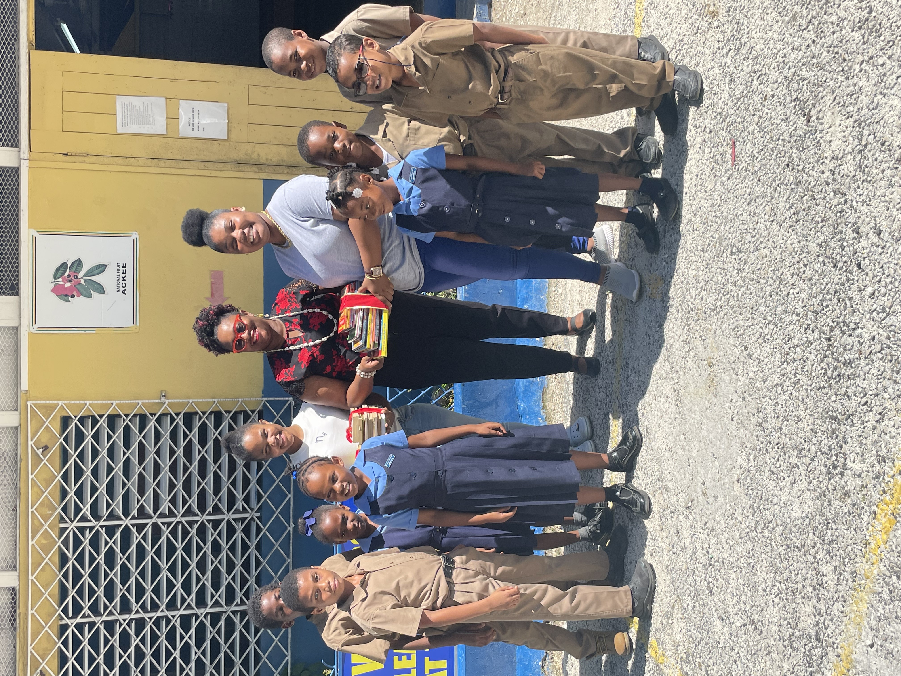

Debra-Kaye Smith
3 posts
420 followers
20 following
🌍 Computer Science Student | Coding meets creativity🎨| Building websites, mini web games and other coding projects| Co-Founder of BooksForKidsJA📚| Future Developer in the making 💻

Family and friends are the heart of my life and the foundation of everything I do. This year, our matching Christmas shirts and the laughter we shared were more than just a tradition- they were a reminder of the love and support that shapes me into the person I strive to be. Whether its celebrating milestones, creating memories or simply being there for one another, my family and friends constantly teach me the value of connection, compassion, and togetherness. These relationships inspire how I approach life and work, grounding me in the importance of collaboration, kindness and staying true to my roots.

Visiting the charming wooden shoe and windmill town in Amsterdam felt like stepping into a storybook! Travel isnt just about seeing new places for me- its about immersing myself in different cultures, learning their history, and appreciating the beauty of traditions that are so different from my own. Moments like this fuel my love for adventure and my curiosity for the world around me, beyond the familiar. Every trip teaches me something new, expands my appreciation for diversity in our world. Its this passion for learning and connecting with other cultures that inspires how I approach life, with an open heart and an eagerness to learn and to grow.

This moment from one of our book donations at a basic school with BooksForKidsJA holds a special place in my heart. I've always believed in power of giving back and helping others, especially those in need. Its a passion that drives everything I do and one of the main reasons I work so hard to succeed. For me, success isnt just about personal achievement, its about using my resources, skills and opportunities to make a difference in the lives of others. Whether its through a book, a smile, or helping hand, I'm reminded that even small acts of kindness can create a lasting impact.